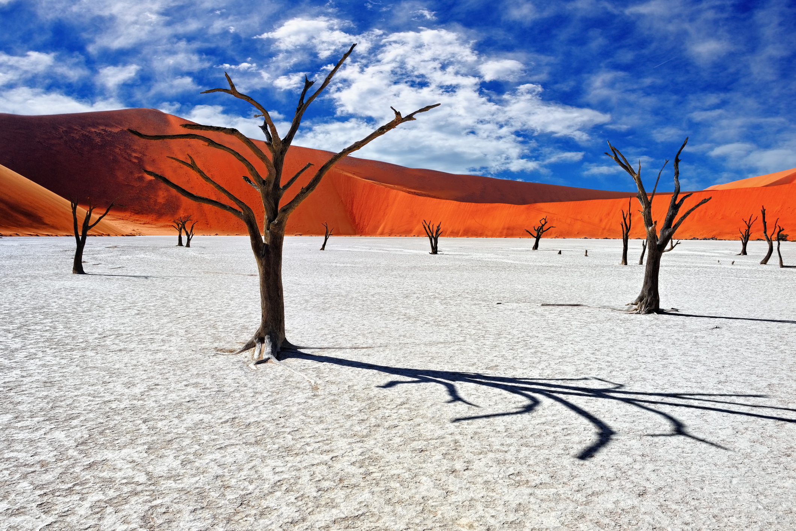

JAPAN

Aside from culture and tradition, Japan also offers some of the world's most spectacular places:
- Tokyo
- Takayama
- Shirakawa
- Kanazawa
- Kyoto
- Nara
- Hiroshima
- Himeji
It will be a lot of fun to visit the countless attractions that the country has to offer:
- Follow the Sakura (Cherry Blossoms)
- Party With Robots In Tokyo
- Explore the Temples of Mount Koyaa
- Hike With Monkeys on Monkey Mountain
- Hike the Legendary Mount Fuji
- Spend The Night in a Capsule Hotel
- Relax In Rikugen Garden
- Commemorate The Past In The Nagasaki Bombing Museum
No matter your tastes, you'll love eating your way through Japan. Here, we would like to introduce some of the most delicious Japanese dishes and foods to try during your stay in Japan:
- Sushi
- Tempura
- Sukiyaki
- Kaiseki Ryori
- Tonkatsu
- Soba
- Udon
- Karaage
IRELAND

Enjoy life on the wild side and explore some of Ireland's most breathtaking natural landscapes in:
- Dublin
- Cork City
- The Inishowen Peninsula
- Achill Island
- Beara Peninsula
- Connemara (Galway City)
- Spike Island and cobh
- Kilkenny City
Craic is fun, gossip, a good time – and it will definitely be a part of your Ireland experience:
- Route Causeway Coastal Route
- Explore Wicklow Mountains National Park
- Visit gorgeous little villages as County Cork ans Killaloe
- Hike Cliffs of Moher and overlooked cliffs
- Visit castles like Blarney Castle, Bunratty Castle
- Visit a traditional Irish pub
- Explore the Boyne Valley
- Visit Guinness Storehouse
Granted, most Irish dishes do not utilize herbs and spices But much of the flavor in Irish cooking comes down to the fresh ingredients used and the style of cooking.
- Irish Stew
- Irish Soda Bread
- Colcannon and Champ
- Black and White Pudding
- Dublin Coddle
- Full Irish Breakfast
- Guinness Cake
- Irish Seafood Chowder
NAMIBIA

Namibia is a land of superlatives and contrasts. It is home to Africa’s largest canyon, its oldest desert and some of its highest dunes. Here are eight of the country’s best places to visit:
- Windhoek
- Swakopmund
- Skeketon Coast
- Kanazawa
- Walvis Bay
- Coastal destination of Swakopmund
- Fish River Canyon Park
- Waterberg Plateau Park
If your idea of a dream vacation includes plenty of outdoor adventure and nature photography, then Namibia is the ideal spot to explore:
- Skydive over the Kalahari Desert
- Safari experience in Etosha National Park
- Meet the Himba People
- Hike in Namib-Naukluft National Park
- See Ancient Cave Paintings
- Hop on an ATV over the sand dunes
- Contemplate Stone Arch at Spitzkoppe
- Visit Cape Cross Seal Colony
Exotic meats, vibrant colors, and indigenous traditions all define Namibian food, one of Africa’s most diverse and unique cuisines.
- Oshithima (Maize or Mahangu Pap)
- Oodhingu (Dried Meat)
- Potjiekos (“small-pot food”)
- Fat Cakes
- Oshigali (Beans Puree)
- Boerewors (farmer’s sausage)
- Matangara (Beef or Goat Tripe)
- Owawa (Wild Mushroom)